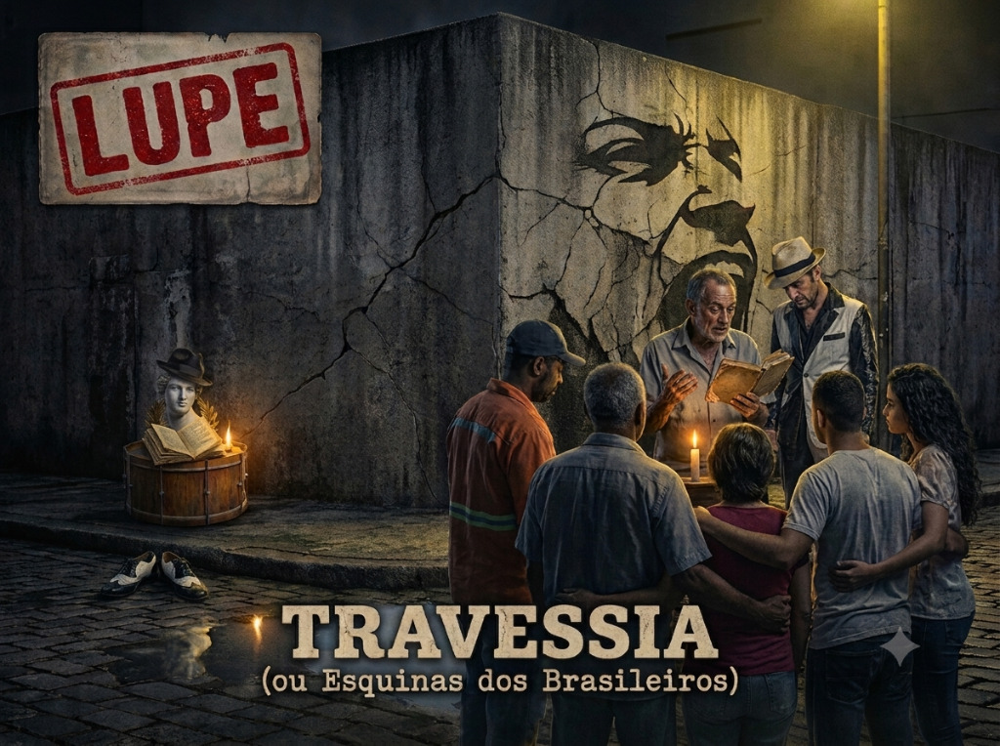

Primeiro, escute.
A explicação chega depois do som, da imagem e do que seu corpo já entendeu.
Uma paidéia em cinco esquinas
Você não precisa conhecer nenhum dos nomes deste site. Basta trazer uma pergunta, dois ouvidos e alguma coisa vivida.

Antes do primeiro passo
Vade-mécum quer dizer algo como “vai comigo”. Este é um livro de bolso aberto na calçada: acompanha a música, oferece chaves e devolve perguntas. Nenhum nome antigo funciona como senha de clube.
A explicação chega depois do som, da imagem e do que seu corpo já entendeu.
A maiêutica não dá gabarito. Ela ajuda sua leitura a nascer e a aprender a se sustentar.
Cada canção é matriosca: rua, biblioteca e oficina vivem uma dentro da outra.
O mapa da jornada
As faixas formam uma única travessia: primeiro o olhar desconfia da aparência; depois o corpo enfrenta o medo, embarca, toca a roda e transforma a ferida em canto comum.
O mapa sugere uma ordem, não uma obrigação. Toda esquina tem mais de uma entrada.
Calíope já desceu do Olimpo.
A coreografia das palavras
Eles não estão ali para vigiar a porta. Funcionam como placas de trânsito dramático: avisam quando a voz vira, responde, para no centro, fala com o público ou sai de cena.
o coro vira o olhar
o coro faz a contravolta
o coro para no centro
A Travessia usa livremente a arquitetura da ode, da comédia e do teatro antigo. Algumas rubricas são históricas; outras — como e — são invenções assumidas do EP. Tradição viva também cria palavra nova.
Dicionário de bolso
Procure um nome, uma rubrica ou uma ideia. A definição curta basta para seguir; a camada longa fica para quem quiser abrir outra boneca.
Seu caderno de bordo
As respostas ficam somente neste navegador. Escreva uma linha ou uma página; ninguém corrige. Depois, exporte o caderno para guardar.
Para uma sala, família ou bar
Não é aula antes da música. É escuta compartilhada com uma regra só: toda leitura aponta para algum som, verso, imagem ou experiência — e ninguém precisa concordar no fim.
Mostre a arte sem o título. Cada pessoa diz uma coisa que viu e uma pergunta.
Toque uma faixa sem explicação e sem interromper.
Cada voz oferece uma imagem, um verso ou um incômodo. Sem debate ainda.
Escolham uma camada da matriosca e uma chave do dicionário.
Em duplas, liguem uma pergunta da faixa a uma travessia vivida.
Ouçam o refrão outra vez. O que mudou sem que a gravação mudasse?
Não precisa explicar tudo. Dê nome a uma rachadura.
O que parecia impossível antes do primeiro passo?
Pistas de leitura
Não é uma lista de pré-requisitos. É um conjunto de caminhos para quem terminou a música com vontade de continuar a conversa.
Links externos abrem em outra aba. A música continua sendo o ponto de partida — e pode ser também o ponto de chegada.